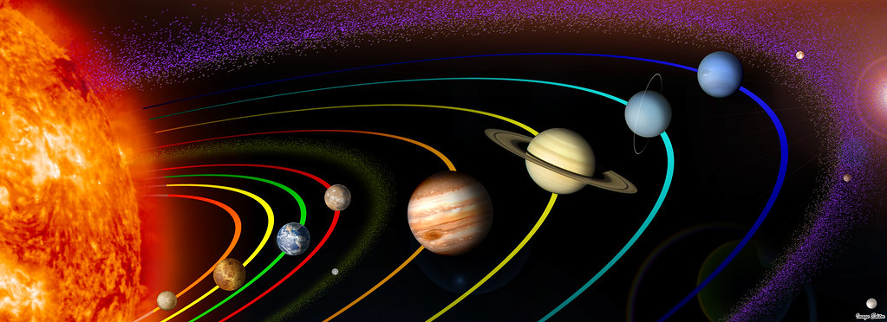

The Solar System formed around 4.6 billion years ago.
For thousands of years humans were unaware of the Solar System and believed that Earth was at the center of the Universe.
Astronomers such as Nicolaus Copernicus , Galileo Galilei, Johannes Kepler, and Isaac Newton helped develop a new model that explained the movement of the planets with the Sun at the center of the Solar System.
| Age: | 4.6 Billion years |
| Type: | Yellow Dwarf |
| Diameter: | 1,392,684 km |
There are 9 planets in our solar system. You can read about them.